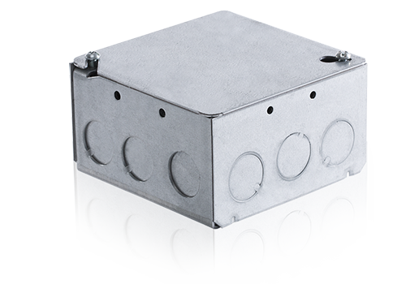

If a simple controller is not enough, our wide variety of DMX accessories will help add dimensions to your system. Add additional inputs and outputs, external control stations, time code capabilities, and additional DMX runs with ease.

DMX WIRING HUB
Moda DMX Wiring Hub makes wiring any DMX 512 project simple, easy and fast. Encased in a standard North American 4” x 4” x 2” electrical junction box this device takes care of all of your wiring needs.
LD180 is a constant voltage LED driver used as an interface for Moda Light RGB products. It has white light DMX dimming options due to its four channel controller. It is capable of being linked together with multiple LD180 devices hooked up to a network for larger DMX installations.
The Pharos TPS is an elegant interface with a customizable, 4.3” capacitive touch screen, that works with any Pharos Controller. The TPS is available in a range of different colored bezels and overlays. Install is easy and convenient as the TPS only requires a single Power-over-Ethernet (PoE) network connection.
The Pharos BPS is a versatile 8-button station with integrated button LEDs that works with any Pharos Controller. The stylish BPS is available in a range of finishes and there are two variants for compatibility with either US or UK back boxes. Install is easy and convenient as the BPS only requires a single Power-over-Ethernet (PoE) network connection...
The function of each button is freely programmable, and each button has a white LED indicator with fully user-controllable brightness and a variety of flash effect options for giving visual feedback. In addition a learning infra-red sensor is included, allowing any standard remote control to be used to trigger button presses. The BPS is part of the Pharos range of Remote Devices, which allow the fully scalable Pharos system to be tailored to the needs of each individual project. Multiple Pharos Controllers can be used together with up to 200 Remote Devices and will synchronize automatically. The Controllers are programmed using the free Pharos Designer 2 software.
The Pharos EXT is an extension for the Pharos TPC and together they form a standalone, mains-powered lighting controller with versatile output and show control options. The TPC is a powerful lighting controller with Ethernet-based output and integration options. However, many DMX and DALI installations don’t need the added complexity of network infrastructure. The EXT provides local DMX and DALI output for the TPC, as well as power and other hardware interfaces...
The EXT connects to its TPC via a Cat 5e or Cat 6 cable, which carries power and data. The EXT is powered from 100-240VAC mains. In addition to DMX output for the TPC’s 512 control channel capacity, the EXT supports a DALI bus connection to send & receive DALI control messages. Other interfaces are RS232 serial and 8 digital/analog inputs for triggering the TPC. The EXT also has its own Ethernet interface to allow some or all of the TPC’s control channels to be sent as eDMX. The EXT requires no additional configuration in the Pharos Designer software – everything is programmed via the TPC in the Designer project file, as if the TPC supported all the additional hardware interfaces directly. The EXT is provided in a compact DIN-rail compatible housing for mounting within an electrical cabinet, or alternatively it can be wall mounted. For easy installation most connections are provided as plug-strips. The solid state design with efficient, embedded firmware ensures unparalleled reliability.
The Pharos POE provides a simple power and networking solution for four Power-over-Ethernet devices with a separate Ethernet uplink port. It is perfect for connecting power and data between Pharos Controllers and Pharos Remote Devices.
The Pharos RIO 80, 44 and 08 devices provide a convenient and scalable way to add inputs and outputs to a Pharos system for show control and integration. Each device can be placed where it is needed and connected to the Controllers over an Ethernet network. Each RIO has a multi-protocol serial port, supporting DMX input and output, and a combination of multi-functional..digital/analog inputs and relay outputs. The RIO is Power-over-Ethernet (PoE) powered, with a rugged DIN rail mounting enclosure and install-friendly connectors. It comes in three variants – one with eight inputs; one with eight outputs; and one with four of each. The inputs are individually configurable as contact closure, active low, active high or 0-24V analog level. The outputs are individually isolated relays (48V, 0.25A). All variants support a multi-protocol serial port. Remote Devices allow the fully scalable Pharos system to be tailored to the needs of each individual project. Multiple Pharos Controllers can be used together with up to 200 Remote Devices and will synchronize automatically. The Controllers are programmed using the free Pharos Designer 2 software.
The Pharos RIO A device provides a convenient and scalable way to add audio integration to your Pharos system. The RIO A has an audio input, supporting linear timecode or up to 30 band spectrum analysis, as well as a MIDI input and output. Each device can be placed where it is needed and connected to the Controllers over an Ethernet network... The RIO A is Power-over-Ethernet (PoE) powered, with a rugged DIN-rail mounting enclosure and install-friendly connectors. The stereo balanced line level audio input supports auto or manual gain (adjustable in software). The spectrum analysis is configurable from 3 to 30 bands on each channel, and triggers can be set on either instantaneous or peak level. The audio input can also be configured to receive linear timecode on either channel. Remote Devices allow the fully scalable Pharos system to be tailored to the needs of each individual project. Multiple Pharos Controllers can be used together with up to 200 Remote Devices and will synchronize automatically. The Controllers are programmed using the free Pharos Designer 2 software.
The Pharos RIO D device provides a convenient and scalable way to control DALI fixtures and ballasts from Pharos Controllers. Each RIO D supports a single DALI bus, which can be used as an output for control and as an input for triggering. Each device can be placed where it is needed and connected to a Pharos Controller over an Ethernet network. The RIO D is Power-over-Ethernet (PoE) powered, with a rugged DIN-rail mounting enclosure and install-friendly connectors. A DALI bus can support up to 64 devices, and the RIO D can also be used for ballast configuration and site commissioning. DALI Emergency ballasts are also supported, with the ability to schedule automatic Function and Duration tests...Remote Devices allow the fully scalable Pharos system to be tailored to the needs of each individual project. Multiple Pharos Controllers can be used together with up to 200 Remote Devices and will synchronize automatically. Pharos Controllers are programmed using the free Pharos Designer 2 software.
CCD - CVD CONSTANT CURRENT DRIVER/CONSTANT VOLTAGE DRIVER
The Pharos CCD and the Pharos CVD are both DMX LED drivers with manual/RDM addressing and test modes for luminaires and other devices. The Pharos control solution provides a host of integrated interfaces to support even the most complex project. However, installers typically require many third party devices to complete a system. Pharos offers a range of DMX LED drivers to extend the reach of our unified and reliable power and data infrastructure...
Both constant current and constant voltage fixtures can be supported by the relevant driver. Each unit provides 6 channels that are individually DMX controlled. Both drivers are provided in a rugged DIN rail enclosure with install-friendly connectors. They support RDM for configuring the DMX start address, updating firmware and RDM locate. The start address may be set manually using the hex wheel, which also provides access to test modes. The DMX input is opto-isolated and a through connection is provided for simple daisy-chaining.
The Pharos RDM is a 4 port DMX512 Splitter compatible with the RDM standard to provide DMX output to luminaires and other devices. DMX splitters are an essential requirement for most control systems, allowing multiple separate cable runs from a single DMX output and ensuring electrical isolation. The RDM is provided in a rugged DIN rail enclosure with install-friendly connectors.